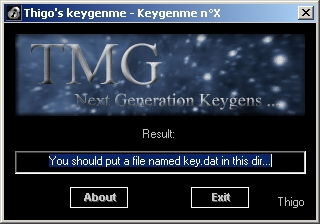
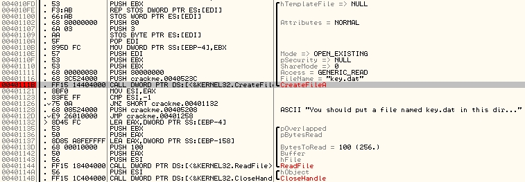
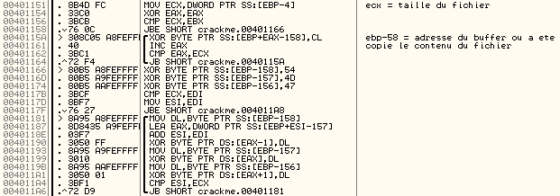
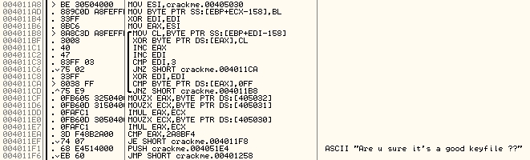
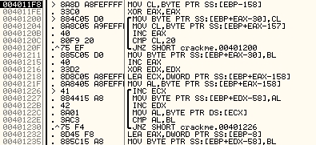
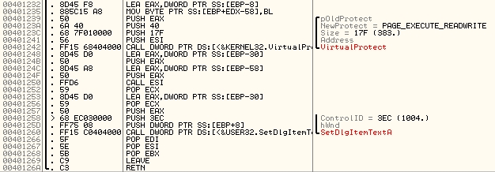
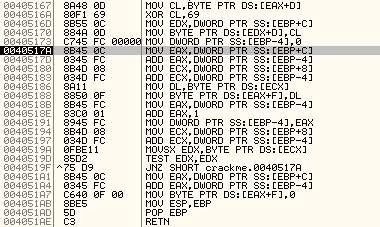
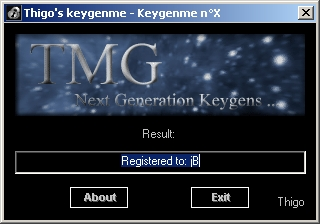

Type de protection: keyfile
Difficulté:
rien de difficile, une petite feinte toutefois
Outils utilisés:
- OllyDbg v1.09c
- TASM v5.0
J'ai trouvé ce keygenme bien intéressant. Il est basé sur des opérations classiques (multiplication et ou exclusif). Mais la structure de la routine est assez tordue pour pouvoir dérouter celui qui s'y attaque un petit moment.
On lance le keygenme:

On a déjà le nom du keyfile: key.dat. C'est
déjà un début...
On crée donc un faux key.dat, et on le remplit avec n'importe
quoi.
J'ai mis 'keyfile de jB', mettez la même chose ça permettra d'avoir
la même chose que moi pour la suite.
Le programme n'est ni packé, ni crypté. On peut donc directement commencer le travail : l'étude du keyfile.
On ouvre le keygenme avec OllyDbg, et on
regarde rapidement les chaines de caractères qui peuvent être intéressantes:
Clic
droit --> Search for --> All referenced text strings.
Dans la liste, on remarque un 'key.dat'.
On
clique deux fois dessus, pour voir à quel moment du programme il est utilisé.
C'est un paramètre de CreateFileA. Voilà qui est intéressant.
On pose donc
un breakpoint à cet endroit là.

ReadFile va ensuite lire le fichier, qui
fera au maximum 100h=256 octets.
Le contenu du fichier sera copié l'adresse
ebp-158.
On lance le programme avec F9, le breakpoint se fait sans problème et on trace jusqu'à ReadFile.
On arrive ensuite ici:

Ce passage est facile à comprendre: on effectue un ou exclusif sur chaque octet du keyfile avec la taille du keyfile.
Puis:
keyfile[0]=keyfile[0]^0x54;
(54h='T')
keyfile[1]=keyfile[1]^0x4d; (4dh='M')
keyfile[2]=keyfile[2]^0x47;
(47h='G')
Enfin, la dernière boucle effectue également
un ou exclusif entre les trois premiers octets du keyfile et le reste du fichier,
de cette manière (i>=1):
keyfile[3i]=keyfile[3i]^keyfile[0];
keyfile[3i+1]=keyfile[3i+1]^keyfile[1];
keyfile[3i+2]=keyfile[3i+2]^keyfile[2]
Une fois passé ceci, votre keyfile devrait ressembler à celà:
0012FBEC 32 25 33 59 41 52 5A 08 5A 5A 08 54 7D
00 33 00 2%3YARZ ZZ T}.3.
0012FBFC 00 00 00 00 00 00 00 00 00
00 00 00 00 00 00 00 ................
Voici la suite:

Apparition d'un nouveau buffer en .405030:
Voici le
début:
00405030 1E BF A2 1A F3 0B B7 34 4E 4B 34 C5 0E
38 88 4B ¿¢ ó ·4NK4Å 8^K
00405040 32 C5 06 38 88 0A 35
43 C0 61 42 8D 76 4C 45 BF 2Å 8^.5CÀaB�vLE¿
00405050 0B 47 F2
0E 48 3A C5 06 38 88 0A 30 52 C0 61 42 Gò H:Å 8^.0RÀaB
La boucle n'est pas exactement la même que précédemment, mais elle fait exactement la même chose: on applique à chaque octet de ce nouveau buffer un ou exclusif avec les trois premiers octets du keyfile.
Voilà ce que ça donne (i>=0):
buffer[3i]=buffer[3i]^keyfile[0];
buffer[3i+1]=buffer[3i+1]^buffer[1];
buffer[3i+2]=buffer[3i+2]^buffer[2]
Puis les trois premiers octets du buffer
sont multipliés entre eux. On doit avoir:
buffer[0]*buffer[1]*buffer[2]=2A8BF4h
Normalement, si vous avez utilisé le même keyfile que moi vous devriez obtenir ceci:
00405030 2C 9A 91 28 D6 38 85 11 7D 79 11 F6 3C
1D BB 79 ,s'(Ö8. }y ö< »y
00405040 17 F6 34 1D BB 38 10 70
F2 44 71 BF 53 7F 77 9A ö4 »8 pòDq¿Sws
00405050 38 75
D7 3D 7A 1F F6 34 1D BB 38 15 61 F2 44 71 8u×=z ö4 »8 aòDq
00405060
BF 53 78 2D 9A 38 75 D7 3D 7F 2F F6 34 1D BB 38 ¿Sx-s8u×=/ö4 »8
00405070
16 5B F2 44 71 BF 53 75 51 9A 38 75 D7 3D 70 32 [òDq¿SuQs8u×=p2
00405080
F6 34 1D BB 38 1B 00 F2 44 71 BF 53 76 59 9A 38 ö4 »8 .òDq¿SvYs8
00405090
75 D7 3D 75 16 F6 34 1D BB 38 1C 2E F2 44 71 BF u×=u ö4 »8 .òDq¿
004050A0
53 73 59 9A 38 75 9B 75 F9 E0 29 F2 44 71 F1 1B SsYs8u>uùà)òDqñ
004050B0 F6 3C 1D F7 31 10 FD 88 79 F6 2C 1D F5 33 10 F6 ö<
÷1 ı^yö, õ3 ö
Et donc: 2Ch*9Ah*91h=EFDF8h
ce qui est loin d'être égal à 2A8BF4h=2788340...
Le mieux pour le moment
me parait de regarder la suite: on inverse le résultat de la comparaison en
cliquant sur le 'Z' dans la fenêtre de flags.
On verra plus tard...
On passe le saut conditionnel. On a évité le "Are u sure it's a good keyfile", et on arrive ici:

ebp-158 est l'adresse où a été copié le keyfile
précédemment.
Les deux boucles utilisées ne sont pas compliquées, encore
une fois:
La première copie le keyfile à l'adresse ebp-30, jusqu'à ce qu'un octet du keyfile soit égal à 20h (i.e un espace). Le problème, c'est qu'il n'y a pas d'espace dans le keyfile, depuis qu'il a été crypté. Alors la routine va copier beaucoup trop d'octets, et risque d'arriver dans une zone de mémoire protégée (vous pouvez tester, effectivement ça plante). Alors on va en rajouter un. Je l'ai rajouté ici, vers le milieu en fait:
0012FBEC 32 25 33 59 41 52 5A 20
5A 5A 08 54 7D 00 33 00 2%3YARZ ZZ T}.3.
0012FBFC 00 00 00 00
00 00 00 00 00 00 00 00 00 00 00 00 ................
La seconde boucle copie la deuxième partie du keyfile
à l'adresse ebp-58, jusqu'à ce que la fin ce que l'on rencontre un 0h. Là ça
ne pose pas de problème. Tout se passe bien.
Vous devriez alors obtenir:
0012FCEC 5A
5A 08 54 7D 00 00 00 00 00 00 00 00 00 00 00 ZZ
T}...........
0012FCFC 00 00 00 00 00 00 00 00 00 00 00 00 00 00 00
00 ................
0012FD0C 00 00 00 00 00 00 00 00 32
25 33 59 41 52 5A 00 ........2%3YARZ.
Et on se trouve maintenant ici:

VirtualProtect va rendre la zone de mémoire à l'adresse
.405030 (esi) exécutable, et le call esi va faire exécuter cette zone.
Le
problème, c'est que cette zone de mémoire, c'est le buffer décrypté précédemment
avec les trois premiers caractères du keyfile.
On peut se douter très fortement
que ça va pas ressembler à du code qui veuille dire quelque chose...
Effectivement ça plante.
Là c'est peut-être ma partie la plus délicate. Disons
que c'est facile à comprendre mais il fallait y penser.
Puisque c'est censé être une procédure, on peut imaginer
qu'elle doit commencer par:
55 push ebp
8B EC mov ebp, esp
Pour le moment, les trois premiers octets de la procédure
sont 2C, 9A, 91.
On sait comment est cryptée le buffer.
Pour obtenir le
résultat voulu, il faut calculer les trois premiers octets du keyfile crypté:
keyfile[0]=buffer[0]^0x55h=0x1E^0x55;
keyfile[1]=buffer[1]^0x8Bh=0xBF^0x8B;
keyfile[2]=buffer[2]^0xECh=0xA2^0xEC;
Ce qui donne finalement:
keyfile[0]=0x4B='K'
keyfile[1]=0x34='4'
keyfile[1]=0x4E='N'
Apparemment, on est sur la bonne voie.
D'autant plus
que 55*5B*EC=2A8BF4h
Les trois premiers caractères du keyfile avaient subi
deux ou exclusifs auparavant. On va calculer les trois premiers octets d'origine:
La
taille du keyfile est 13 octets=0xD.
On a donc:
keyfile[0]='K'^'T'^0xD=0x12
keyfile[1]='4'^'M'^0xD=0x74
keyfile[2]='N'^'G'^0xD=0x4
On relance le prog avec Olly après avoir modifié les trois
premiers octets du keyfile.
Le saut conditionnel se fait bien, en .4011EF
(le produit des trois chiffres vérifiant bien l'égalité)
Coup de chance cette fois ci, dans le keyfile modifié il y a bien un octet égal à 0x20. Les deux boucles suivant le saut conditionnel se passent donc sans problème.
On arrive au call esi, et on rentre à l'intérieur de la
routine.
Cette fois, ça veut bien dire quelque chose. On trace un peu, pour
voir ce qui se passe.
En fait, tout le début de la routine sert à créer et
décrypter une chaine, pour donner finalement 'Registered to: ' à une nouvelle
adresse.

On a, à l'endroit où je me situe sur la capture:
0012FD14 52 65 67 69 73 74 65 72
65 64 20 74 6F 3A 20 00 Registered to: .
0012FD24 00 00 00 00
00 00 00 00 00 00 00 00 00 00 00 00 ................
0012FD34 00
00 00 00 00 00 00 00 04 00 00 00 0D 00 00 00 ........ .......
La boucle suivante va tout simplement copier
la seconde partie du keyfile à la suite de 'Registered to: '.
Cette chaine
sera ensuite affichée avec SetDlgItemTextA.
On obtient: Registered to: P/# '# )
Maintenant, il faut obtenir un keyfile à notre nom.
On
sait déterminer les 3 premiers caractères du keyfile. Pas besoin de mettre de
première partie, on va s'arranger pour avoir directement un 0x20 après ces trois
premiers caractères.
Enfin, la deuxième partie du keyfile doit afficher notre
nom une fois décryptée.
On doit donc avoir un keyfile de 6 octets pour mon
nom (trois premiers chars, un espace et 'jB').
Ce qui donne:
keyfile[0]='K'^'T'^0x6=0x19
keyfile[1]='4'^'M'^0x6=0x7F
keyfile[2]='N'^'G'^0x6=0xF
keyfile[3]=' '^'K'^0x6=0x6D
keyfile[4]='j'^'4'^0x6=0x58
keyfile[5]='B'^'N'^0x6=0xA
Le keyfile est donc (en hexa): 19 7F 0F 6D 58 0A
On ouvre le keygenme, et on obtient:

Et voilà c'est terminé.
jB